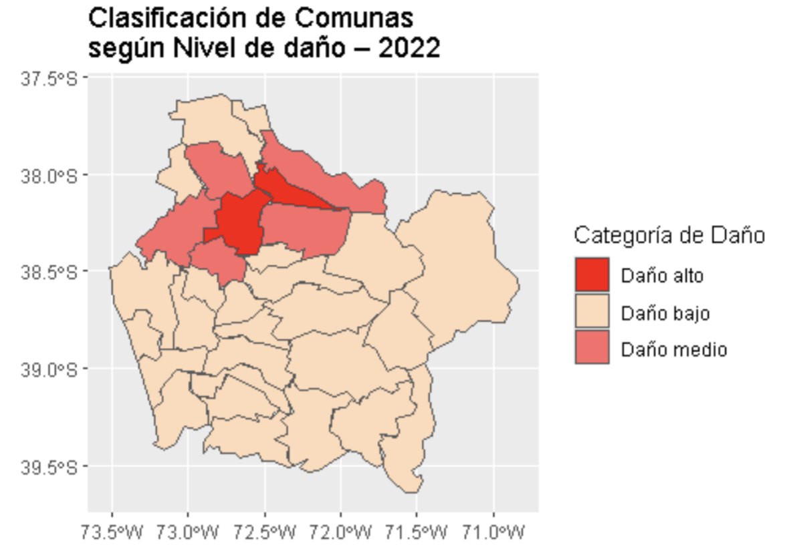
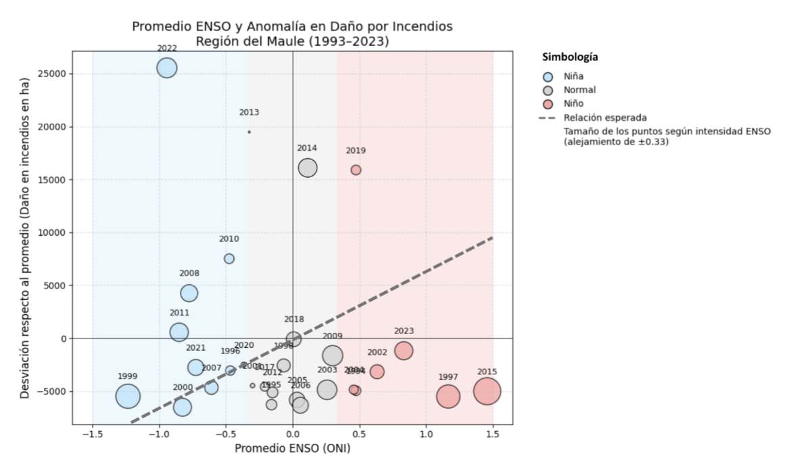
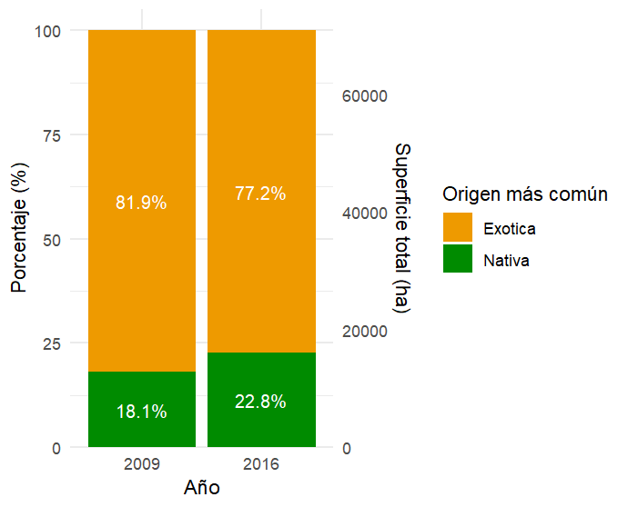
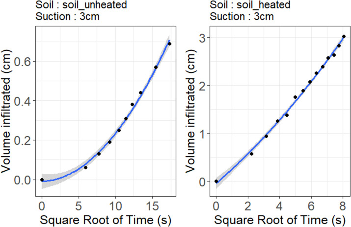
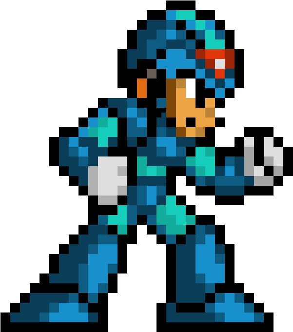
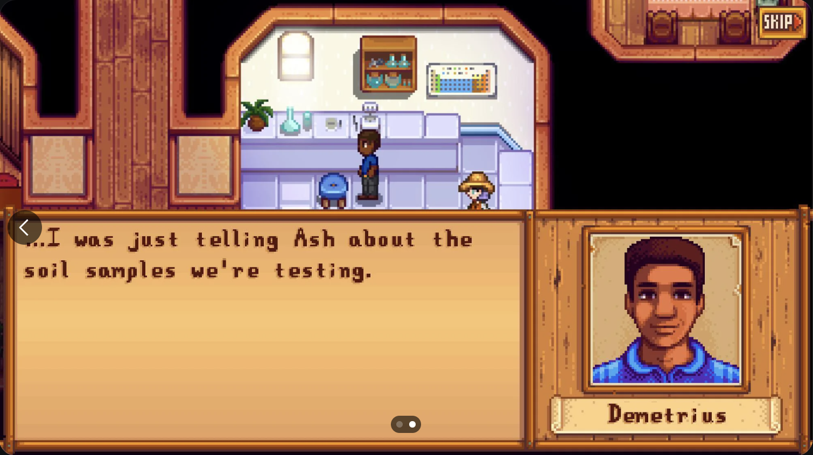

library(leaflet)
leaflet() %>%
addTiles() %>% # Add default OpenStreetMap map tiles
addMarkers(lng=-70.6412692, lat=-33.4356565, popup="Parque Forestal") %>%
addMarkers(lng=-70.6401543, lat=-33.4404796, popup="Parque San Borja") %>%
addMarkers(lng=-70.6320152, lat=-33.4348176, popup="Parque Balmaceda") %>%
addMarkers(lng=-70.6185047, lat=-33.4957693, popup="Campus San Joaquín")Me now
üë©üèΩ‚Äçüíª Research
My research is focused on laboratory and field studies related to soil science and environmental studies, specifically in soil physics. Now I am interested in to understand urban soil ecosystem services, as part of my participation at the Centre for Sustainable Urban Development, CEDEUS. I am actively seeking collaboration opportunities in this topic. For example, I started to sample soil samples in parks in Santiago:
Work in progress!
üë©üèΩ‚Äçüè´ Teaching
I’m currently teaching: - Geology/soil science (100%) - Research methodologies (50%) - Data analysis and visualization (100%)
Together with my colleague Felipe Lobos we teach R and python. Take a look at some of the results of the research methodologies course.




üìù Publications and Conferences
I am writing academic articles related to urban soils and soil physics. I am super proud of my colleagues Cristina Contreras and Carolina Giraldo, and together we have published cool new stuff.
üì¶ R packages
I have developed two R packages:
- ggsoiltexture: Provides a simple ggplot function for the plotting of soil textural data
- InfiltrodiscR: Provides functions for the modeling of data derived from the Minidisk Infiltrometer device.


üéÆ Hobbies
When I was a kid, I never got to play much SNES or PS1 because my brothers used the consoles. Now as an adult, I set out to play some games on my own. This year I finished Megaman X and Megaman X2, and I want to advance in the saga.

I am a fan of the game Stardew Valley, in November there is a major game update, so that will keep me entertained for many months.
